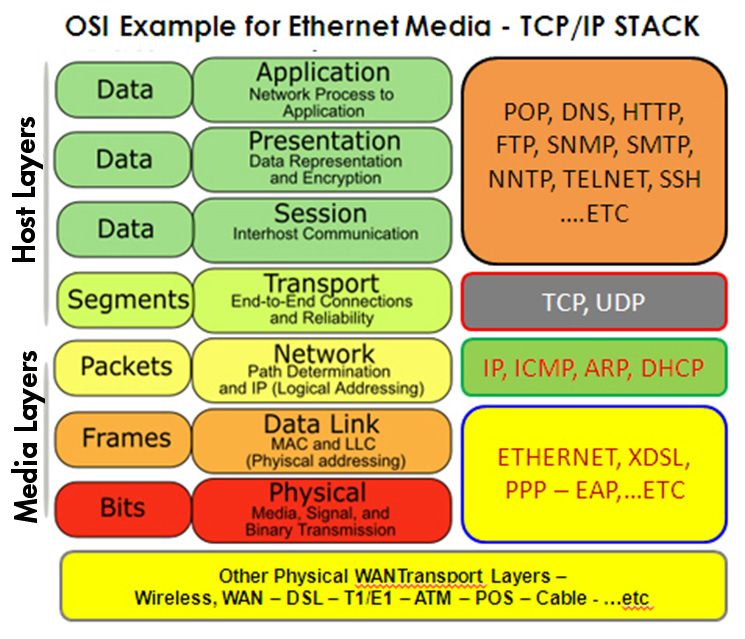
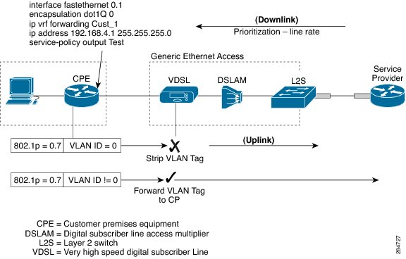
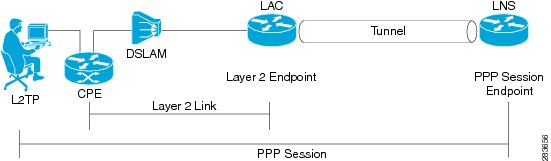
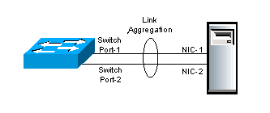
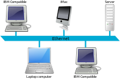
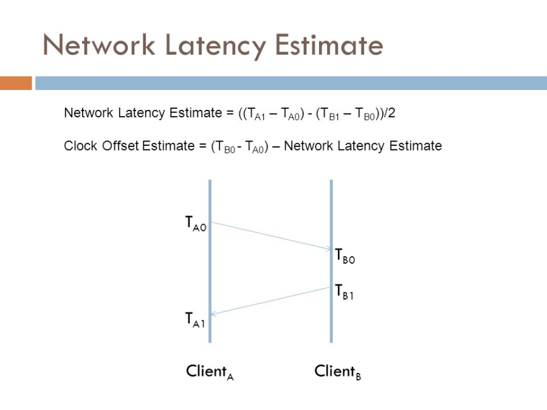
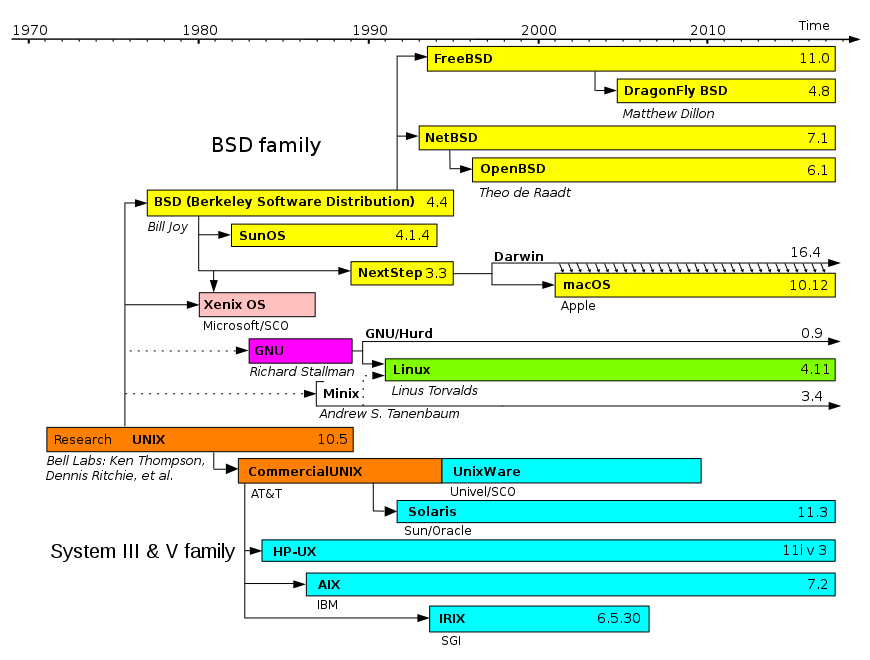
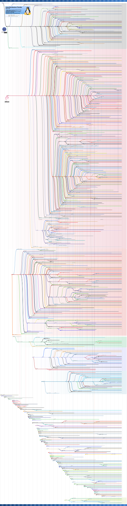
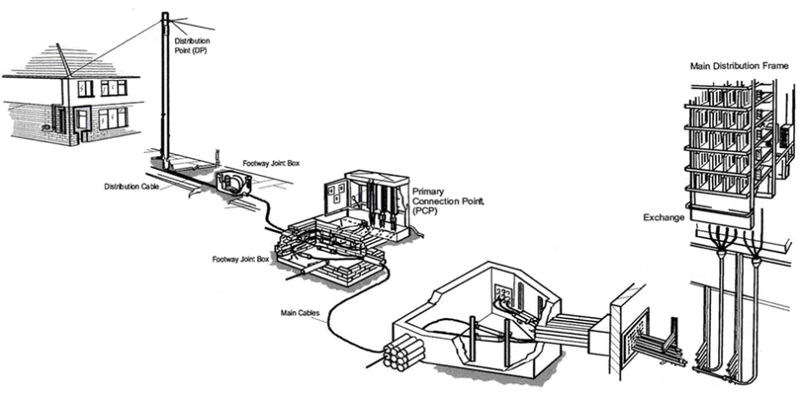
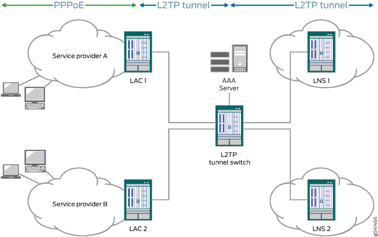

L1 | Layer 1 | In the seven-layer OSI model of computer networking, the physical layer or layer 1 is the first and lowest layer. This layer may be implemented by a PHY chip.
The physical layer consists of the electronic circuit transmission technologies of a network. It is a fundamental layer underlying the higher level functions in a network. Due to the plethora of available hardware technologies with widely varying characteristics, this is perhaps the most complex layer in the OSI architecture.[citation needed]
The physical layer defines the means of transmitting raw bits rather than logical data packets over a physical data link connecting network nodes. The bitstream may be grouped into code words or symbols and converted to a physical signal that is transmitted over a transmission medium. The physical layer provides an electrical, mechanical, and procedural interface to the transmission medium. The shapes and properties of the electrical connectors, the frequencies to broadcast on, the line code to use and similar low-level parameters, are specified here.

|
L2 | Layer 2 | The data link layer, or layer 2, is the second layer of the seven-layer OSI model of computer networking. This layer is the protocol layer that transfers data between adjacent network nodes in a wide area network (WAN) or between nodes on the same local area network (LAN) segment. The data link layer provides the functional and procedural means to transfer data between network entities and might provide the means to detect and possibly correct errors that may occur in the physical layer.
The data link layer is concerned with local delivery of frames between nodes on the same level of the network. Data-link frames, as these protocol data units are called, do not cross the boundaries of a local network. Inter-network routing and global addressing are higher-layer functions, allowing data-link protocols to focus on local delivery, addressing, and media arbitration. This way, the data link layer is analogous to a neighborhood traffic cop; it endeavors to arbitrate between parties contending for access to a medium, without concern for their ultimate destination. When devices attempt to use a medium simultaneously, frame collisions occur. Data-link protocols specify how devices detect and recover from such collisions, and may provide mechanisms to reduce or prevent them.
Examples of data link protocols are Ethernet for local area networks (multi-node), the Point-to-Point Protocol (PPP), HDLC and ADCCP for point-to-point (dual-node) connections. In the Internet Protocol Suite (TCP/IP), the data link layer functionality is contained within the link layer, the lowest layer of the descriptive model.
|
L2F | Layer 2 Forwarding | L2F, or Layer 2 Forwarding, is a tunneling protocol developed by Cisco Systems, Inc. to establish virtual private network connections over the Internet. L2F does not provide encryption or confidentiality by itself; It relies on the protocol being tunneled to provide privacy. L2F was specifically designed to tunnel Point-to-Point Protocol (PPP) traffic. |
L2S | Local Layer 2 Primary Switch Local Exchange (EX4200) | 
|
L2TP | Layer 2 Tunnelling Protocol | In computer networking, Layer 2 Tunnelling Protocol (L2TP) is a tunnelling protocol used to support virtual private networks (VPNs) or as part of the delivery of services by ISPs. It does not provide any encryption or confidentiality by itself. |
L2TP | Layer 2 Tunneling Protocol | In computer networking, Layer 2 Tunneling Protocol (L2TP) is a tunneling protocol used to support virtual private networks (VPNs) or as part of the delivery of services by ISPs. It does not provide any encryption or confidentiality by itself. Rather, it relies on an encryption protocol that it passes within the tunnel to provide privacy. |
L2VPN | Layer 2 Virtual Private Network | A Layer 2 MPLS VPN is a term in computer networking. It is a method that Internet service providers use to segregate their network for their customers, to allow them to transmit data over an IP network. This is often sold as a service to businesses.
Layer 2 VPNs are a type of Virtual Private Network (VPN) that uses MPLS labels to transport data. The communication occurs between routers that are known as Provider Edge routers (PEs), as they sit on the edge of the provider's network, next to the customer's network.
Internet providers who have an existing Layer 2 network (such as ATM or Frame Relay) may choose to use these VPNs instead of the other common MPLS VPN, Layer 3. There is no one IETF standard for Layer 2 MPLS VPNs. Instead, two methodologies may be used. Both methods use a standard MPLS header to encapsulate data. However, they differ in their signaling protocols. |
L3VPN | Layer 3 Virtual Private Network | Layer 3 Virtual Private Networks (l3vpn): L3VPN is a technology based on PE. It uses MPLS to forward VPN packets over service provider backbones.
L3VPN comprises the following types of devices:
Customer edge (CE) device—A CE resides on a customer network and has one or more interfaces directly connected to service provider networks. It can be a router, a switch, or a host.
· Provider edge (PE) device—A PE resides at the edge of a service provider network and connects one or more CEs. On an MPLS network, all VPN services are processed on the PEs.
· Provider (P) device—A P device is a core device on a service provider network. It is not directly connected to any CE. It has only basic MPLS forwarding capability. |
LAC | L2TP Access Concentrator | The two endpoints of an L2TP tunnel are called the LAC (L2TP Access Concentrator) and the LNS (L2TP Network Server). The LNS waits for new tunnels. Once a tunnel is established, the network traffic between the peers is bidirectional. To be useful for networking, higher-level protocols are then run through the L2TP tunnel. To facilitate this, an L2TP session (or 'call') is established within the tunnel for each higher-level protocol such as PPP. Either the LAC or LNS may initiate sessions. The traffic for each session is isolated by L2TP, so it is possible to set up multiple virtual networks across a single tunnel. MTU should be considered when implementing L2TP.

|
LACP | Link Aggregation Control Protocol | Within the IEEE specification, the Link Aggregation Control Protocol (LACP) provides a method to control the bundling of several physical ports together to form a single logical channel. LACP allows a network device to negotiate an automatic bundling of links by sending LACP packets to the peer (directly connected device that also implements LACP).
LACP Features and practical examples
Maximum number of bundled ports allowed in the port channel: Valid values are usually from 1 to 8. LACP packets are sent with multicast group MAC address 01:80:c2:00:00:02 (01-80-c2-00-00-02) During LACP detection period
LACP packets are transmitted every second Keep alive mechanism for link member: (default: slow = 30s, fast=1s)
LACP can have the port-channel load-balance mode :
LACP mode :
|
LAG | Link Aggregation Group | In computer networking, the term link aggregation applies to various methods of combining (aggregating) multiple network connections in parallel in order to increase throughput beyond what a single connection could sustain, and to provide redundancy in case one of the links should fail. A Link Aggregation Group (LAG) combines a number of physical ports together to make a single high-bandwidth data path, so as to implement the traffic load sharing among the member ports in the group and to enhance the connection reliability.

|
LAN | Local Area Network | A local area network (LAN) is a computer network that interconnects computers within a limited area such as a residence, school, laboratory, university campus or office building. By contrast, a wide area network (WAN) not only covers a larger geographic distance, but also generally involves leased telecommunication circuits.

|
LANE | ATM LAN Emulation | LAN Emulation (LANE) is a technology that allows an ATM network to function as a LAN backbone. The ATM network must provide multicast and broadcast support, address mapping (MAC-to-ATM), SVC management, and a usable packet format. LANE also defines Ethernet and Token Ring ELANs. |
LAS | MPLS L2/B2B Aggregation Local (M2F) | MPLS L2/B2B Aggregation Local (M2F) - Location: Local |
Latency |
| Latency refers to a short period of delay (usually measured in milliseconds) between when an audio signal enters and when it emerges from a system. Potential contributors to latency in an audio system include analog-to-digital conversion, buffering, digital signal processing, transmission time, digital-to-analog conversion and the speed of sound in the transmission medium.
Latency can be a critical performance metric in professional audio including sound reinforcement systems, foldback systems (especially those using in-ear monitors) live radio and television. Excessive audio latency has the potential to degrade call quality in telecommunications applications. Low latency audio in computers is important for interactivity.
Telephone calls
In all systems, latency can be said to consist of three elements: codec delay, playout delay and network delay.
Latency in telephone calls is sometimes referred to as mouth-to-ear delay; the telecommunications industry also uses the term quality of experience (QoE). Voice quality is measured according to the ITU model; measurable quality of a call degrades rapidly where the mouth-to-ear delay latency exceeds 200 milliseconds. The mean opinion score (MOS) is also comparable in a near-linear fashion with the ITU's quality scale - defined in standards G.107 (page 800),G.108 and G.109 - with a quality factor R ranging from 0 to 100. An MOS of 4 ('Good') would have an R score of 80 or above; to achieve 100R requires an MOS exceeding 4.5.
Cellular calls
The AMR narrowband codec, used currently in UMTS networks, is a low bitrate, highly compressed, adaptive bitrate codec achieving rates from 4.75 to 12.2 kbit/s with 'toll quality' (MOS 4.0 or above) from 7.4 kbit/s. 2G networks use the AMR-12.2 codec, equivalent to GSM-EFR. As mobile operators upgrade existing best-effort networks to support concurrent multiple types of service over all-IP networks, services such as Hierarchical Quality of Service (H-QoS) allow for per-user, per-service QoS policies to prioritise time-sensitive protocols like voice calls and other wireless backhaul traffic. Along with more efficient voice codecs, this helps to maintain a sufficient MOS rating whilst the volume of overall traffic on often oversubscribed mobile networks increases with demand.
Another overlooked aspect of mobile latency is the inter-network handoff; as a customer on Network A calls a Network B customer the call must traverse two separate Radio Access Networks, two core networks and an interlinking Gateway Mobile Switching Centre (GMSC) which performs the physical interconnecting between the two providers.
IP calls
On a stable connection with sufficient bandwidth and minimal latency, VoIP systems typically have a minimum of 20 ms inherent latency and target 150 ms as a maximum latency for general consumer use. With end-to-end QoS managed and assured rate connections, latency can be reduced to analogue PSTN/POTS levels. Latency is a larger consideration in these systems when an echo is present therefore popular VoIP codecs such as G.729 perform complex voice detection and noise suppression.

|
Lawful intercept |
| Lawful interception (LI) refers to the facilities in telecommunications and telephone networks that allow law enforcement agencies with court order or other legal authorization to selectively wiretap individual subscribers. Most countries require licensed telecommunications operators to provide their networks with Legal Interception gateways and nodes for the interception of communications. The interfaces of these gateways have been standardized by telecommunication standardization organizations.
With the legacy public switched telephone network (PSTN), wireless, and cable systems, lawful interception (LI) was generally performed by accessing the mechanical or digital switches supporting the targets' calls. The introduction of packet switched networks, softswitch technology, and server-based applications the past two decades fundamentally altered how LI is undertaken.
Lawful interception differs from the dragnet-type mass surveillance sometimes done by intelligence agencies, where all data passing a fiber-optic splice or other collection point is extracted for storage or filtering. It is also separate from the data retention of metadata that has become a legal requirement in some jurisdictions. |
LCR | Least Cost Routing | In voice telecommunications, least-cost routing (LCR) is the process of selecting the path of outbound communications traffic based on cost. Within a telecoms carrier, an LCR team might periodically (monthly, weekly or even daily) choose between routes from several or even hundreds of carriers for destinations across the world. This function might also be automated by a device or software program known as a "Least Cost Router." |
LDAP |
| The Lightweight Directory Access Protocol is an open, vendor-neutral, industry standard application protocol for accessing and maintaining distributed directory information services over an Internet Protocol (IP) network. Directory services play an important role in developing intranet and Internet applications by allowing the sharing of information about users, systems, networks, services, and applications throughout the network. As examples, directory services may provide any organized set of records, often with a hierarchical structure, such as a corporate email directory. Similarly, a telephone directory is a list of subscribers with an address and a phone number.
LDAP is specified in a series of Internet Engineering Task Force (IETF) Standard Track publications called Request for Comments (RFCs), using the description language ASN.1. The latest specification is Version 3, published as RFC 4511 (a road map to the technical specifications is provided by RFC4510).
A common use of LDAP is to provide a central place to store usernames and passwords. This allows many different applications and services to connect to the LDAP server to validate users.
LDAP is based on a simpler subset of the standards contained within the X.500 standard. Because of this relationship, LDAP is sometimes called X.500-lite. |
Lead Time |
| Lead Time is the time between a customer order and delivery. In software development, it can also be the time between a requirement made and its fulfillment. |
Lean |
| a method of working focused on 'eliminating waste' by avoiding anything that does not produce value for the customer. |
lean programming |
| a concept that emphasizes optimizing efficiency and minimizing waste in the development of a computer program; the concept is also applicable to all enterprise practices. |
Leased Line |
| A leased line is a private bidirectional or symmetric telecommunications circuit between two or more locations provided in exchange for a monthly rent. Sometimes known as a private circuit or data line in the UK.
Unlike traditional PSTN lines they do not have telephone numbers, each side of the line being permanently connected and dedicated to the other. Leased lines can be used for telephone, Internet, or other data services. Some are ringdown services, and some connect to a private branch exchange or router.
Typically, leased lines are used by businesses to connect geographically distant offices. Unlike dial-up connections, a leased line is always active. The fee for the connection is a fixed monthly rate. The primary factors affecting the monthly fee are distance between end points and the speed of the circuit. Because the connection does not carry anybody else's communications, the carrier can assure a given level of quality.
An Internet leased line is a premium Internet connectivity product, normally delivered over fiber, which provides uncontended, symmetrical speeds with full duplex. It is also known as an ethernet leased line, dedicated line, data circuit or private line.
For example, a T1 can be leased and provides a maximum transmission speed of 1.544 Mbit/s. The user can channelize the T1 to separate the 24 DS0 circuits for voice communication, partial the T1 for data and voice communications, or multiplex the channels into a single data circuit. Leased lines, as opposed to DSL, are being used by companies and individuals for Internet access because they afford faster data transfer rates and are cost-effective for heavy users of the Internet. |
LeSS | large-scale Scrum | agile development method. |
Lifecycle |
| A model of all activities between the initial idea for a system and its last use, often heavily focused on the creation of the system as part of a project. Lifecycles are quite varied, but normally separate activities into phases that reflect progression of time and/or grouping of similar activities. Projects select and customize lifecycles to define ordering and optimize performance of activities . |
Lines of Code | LOC
KLOC | Size measure for a software system that captures the number of lines of source code in the system. Normally created by a tool that seeks to count non-comment, non-blank source code instructions.
KLOC is often used for 'thousands of LOC'. |
Link |
| Reference to content inside of CxOne, usually denoted as an italicized file name. Compare to pointer. |
Linux |
| Linux is a family of free and open-source software operating systems built around the Linux kernel. Typically, Linux is packaged in a form known as a Linux distribution (or distro for short) for both desktop and server use. The defining component of a Linux distribution is the Linux kernel, an operating system kernel first released on September 17, 1991, by Linus Torvalds. Many Linux distributions use the word "Linux" in their name. The Free Software Foundation uses the name GNU/Linux to refer to the operating system family, as well as specific distributions, to emphasize that most Linux distributions are not just the Linux kernel, and that they have in common not only the kernel, but also numerous utilities and libraries, a large proportion of which are from the GNU project.

Widely used distributions Debian, a non-commercial distribution and one of the earliest, maintained by a volunteer developer community with a strong commitment to free software principles and democratic project management
Knoppix, the first Live CD distribution to run completely from removable media without installation to a hard disk, derived from Debian Linux Mint Debian Edition (LMDE) uses Debian packages directly (rather than Ubuntu's) Ubuntu, a desktop and server distribution derived from Debian, maintained by British company Canonical Ltd.
Kubuntu, the KDE version of Ubuntu Linux Mint, a distribution based on and compatible with Ubuntu. Supports multiple desktop environments, among others GNOME Shell fork Cinnamon and GNOME 2 fork MATE. Trisquel, an Ubuntu-based distribution based on Linux-libre kernel composed entirely of free software Elementary OS, an Ubuntu-based distribution with strong focus on the visual experience without sacrificing performance.
Fedora, a community distribution sponsored by American company Red Hat and the successor to the company's previous offering, Red Hat Linux. It aims to be a technology testbed for Red Hat's commercial Linux offering, where new open source software is prototyped, developed, and tested in a communal setting before maturing into Red Hat Enterprise Linux.
Red Hat Enterprise Linux (RHEL), a derivative of Fedora, maintained and commercially supported by Red Hat. It seeks to provide tested, secure, and stable Linux server and workstation support to businesses.
CentOS, a distribution derived from the same sources used by Red Hat, maintained by a dedicated volunteer community of developers with both 100% Red Hat-compatible versions and an upgraded version that is not always 100% upstream compatible. Oracle Linux, which is a derivative of Red Hat Enterprise Linux, maintained and commercially supported by Oracle Scientific Linux, a distribution derived from the same sources used by Red Hat, maintained by Fermilab
Mandriva Linux was a Red Hat derivative popular in several European countries and Brazil, backed by the French company of the same name. After the company went bankrupt, it was superseded by OpenMandriva Lx,[20][21] although a number of derivatives now have a larger user base.
Mageia, a community fork of Mandriva Linux created in 2010 PCLinuxOS, a derivative of Mandriva, which grew from a group of packages into a community-spawned desktop distribution ROSA Linux, another former derivative of Mandriva, now developed independently
openSUSE, a community distribution mainly sponsored by German company SUSE.
Arch Linux, a rolling release distribution targeted at experienced Linux users and maintained by a volunteer community, offers official binary packages and a wide range of unofficial user-submitted source packages. Packages are usually defined by a single PKGBUILD text file.
Manjaro Linux, a derivative of Arch Linux that includes a graphical installer and other ease-of-use features for less experienced Linux users. Rolling release packages from Arch repositories are held for further testing to achieve increased stability, and packages identified as addressing security issues of critical or high severity are "fast-tracked" to the stable branch.
Gentoo, a distribution targeted at power users, known for its FreeBSD Ports-like automated system for compiling applications from source code
Chrome OS, Google's commercial operating system (using Gentoo and its Portage) that primarily runs web applications Chromium OS, the fully open-source version of Chrome OS
Slackware, created in 1993, one of the first Linux distributions and among the earliest still maintained, committed to remain highly Unix-like and easily modifiable by end users

|
lisp |
| Lisp (historically, LISP) is a family of computer programming languages with a long history and a distinctive, fully parenthesized prefix notation. Originally specified in 1958, Lisp is the second-oldest high-level programming language in widespread use today. Only Fortran is older, by one year. Lisp has changed since its early days, and many dialects have existed over its history. Today, the best known general-purpose Lisp dialects are Common Lisp and Scheme.
Lisp was originally created as a practical mathematical notation for computer programs, influenced by the notation of Alonzo Church's lambda calculus. It quickly became the favored programming language for artificial intelligence (AI) research. As one of the earliest programming languages, Lisp pioneered many ideas in computer science, including tree data structures, automatic storage management, dynamic typing, conditionals, higher-order functions, recursion, the self-hosting compiler, and the read–eval–print loop.
The name LISP derives from "LISt Processor". Linked lists are one of Lisp's major data structures, and Lisp source code is made of lists. Thus, Lisp programs can manipulate source code as a data structure, giving rise to the macro systems that allow programmers to create new syntax or new domain-specific languages embedded in Lisp.
The interchangeability of code and data gives Lisp its instantly recognizable syntax. All program code is written as s-expressions, or parenthesized lists. A function call or syntactic form is written as a list with the function or operator's name first, and the arguments following; for instance, a function f that takes three arguments would be called as (f arg1 arg2 arg3). |
Lite | Lite | CxOne concept, see CxOneOverview for description. |
LL | Local Loop | 
|
LNS | L2TP Network Server | The two endpoints of an L2TP tunnel are called the LAC (L2TP Access Concentrator) and the LNS (L2TP Network Server). The LNS waits for new tunnels. Once a tunnel is established, the network traffic between the peers is bidirectional.
|
Local Build | LB | Build performed in a local development environment. Compare to project build. |
Local Development Environment | LDE | A development environment that is local to an individual engineer. This is normally the machines in an engineer's office. Compare to build environment. |
Local Loop |
| In telephony, the local loop (also referred to as a local tail, subscriber line, or in the aggregate as the last mile) is the physical link or circuit that connects from the demarcation point of the customer premises to the edge of the common carrier or telecommunications service provider's network.
At the edge of the carrier access network in a traditional public telephone network, the local loop terminates in a circuit switch housed in an incumbent local exchange carrier or telephone exchange. |
Local Test Environment | LTE | The portion of the local development environment that supports construction testing. |
LoFi Prototype |
| See low fidelity prototype. |
Low Fidelity Prototype |
| A mockup of a system using pencil and paper, post-its, or other non-technology based tools. |
Low Level Design | LLD | Design level between high level design and construction. Defines design in a way that directly supports construction. See CxStand_Design for more information. |
LPS | MPLS Primary Switch Local Exchange (M2F) | MPLS Primary Switch Local Exchange (M2F) - Location: Local |
LSP | Label Switched Path | A label-switched path (LSP) is a path through an MPLS network, set up by a signaling protocol such as LDP, RSVP-TE, BGP (or the now deprecated CR-LDP). The path is set up based on criteria in the FEC.
The path begins at a label edge router (LER), which makes a decision on which label to prefix to a packet, based on the appropriate FEC. It then forwards the packet along to the next router in the path, which swaps the packet's outer label for another label, and forwards it to the next router. The last router in the path removes the label from the packet and forwards the packet based on the header of its next layer, for example IPv4. Due to the forwarding of packets through an LSP being opaque to higher network layers, an LSP is also sometimes referred to as an MPLS tunnel.
The router which first prefixes the MPLS header to a packet is called an ingress router. The last router in an LSP, which pops the label from the packet, is called an egress router. Routers in between, which need only swap labels, are called transit routers or label switch routers (LSRs).
Note that LSPs are unidirectional; they enable a packet to be label switched through the MPLS network from one endpoint to another. Since bidirectional communication is typically desired, the aforementioned dynamic signaling protocols can set up an LSP in the other direction to compensate for this. |
LSR | Label Switched Router | An MPLS router that performs routing based only on the label is called a label switch router (LSR) or transit router. This is a type of router located in the middle of an MPLS network. It is responsible for switching the labels used to route packets. |
LTE (4G) |
| Long-Term Evolution (LTE) is a standard for high-speed wireless communication for mobile devices and data terminals, based on the GSM/EDGE and UMTS/HSPA technologies. It increases the capacity and speed using a different radio interface together with core network improvements. The standard is developed by the 3GPP (3rd Generation Partnership Project) and is specified in its Release 8 document series, with minor enhancements described in Release 9. LTE is the upgrade path for carriers with both GSM/UMTS networks and CDMA2000 networks. The different LTE frequencies and bands used in different countries mean that only multi-band phones are able to use LTE in all countries where it is supported.
LTE is commonly marketed as 4G LTE & Advance 4G, but it does not meet the technical criteria of a 4G wireless service, as specified in the 3GPP Release 8 and 9 document series for LTE Advanced. The requirements were originally set forth by the ITU-R organization in the IMT Advanced specification. However, due to marketing pressures and the significant advancements that WiMAX, Evolved High Speed Packet Access and LTE bring to the original 3G technologies, ITU later decided that LTE together with the aforementioned technologies can be called 4G technologies. The LTE Advanced standard formally satisfies the ITU-R requirements to be considered IMT-Advanced.[4] To differentiate LTE Advanced and WiMAX-Advanced from current 4G technologies, ITU has defined them as "True 4G" |
LTE-M |
| LTE-M (LTE-MTC [Machine Type Communication]), which includes eMTC (enhanced Machine Type Communication), is a type of low power wide area network (LPWAN) radio technology standard developed by 3GPP to enable a wide range of cellular devices and services (specifically, for machine-to-machine and Internet of Things applications). The specification for eMTC (LTE Cat-M1) was frozen in 3GPP Release 13 (LTE Advanced Pro), in June 2016. Other 3GPP IoT technologies include NB-IoT and EC-GSM-IoT. The advantage of LTE-M over NB-IoT is its comparatively higher data rate, mobility, and voice over the network, but it requires more bandwidth, is more costly, and cannot be put into guard band frequency band for now. Compared to LTE Release 12 Cat-0 modem, an LTE-M model is claimed to be 80% less expensive (in terms of the bill of materials), support up to 18 dB better coverage, and a battery lifetime than can last up to several years. In March 2019, the Global Mobile Suppliers Association reported that over 100 operators had deployed/launched either NB-IoT or LTE-M networks. Downlink Peak Rate: 1 Mbit Uplink Peak Rate: 1 Mbit Latency: 10-15 ms Duplex Technology: Half Duplex Device Receive Bandwidth: 1.4MHz to 5MHz Device Transmit Power: 20 dBm
|
LTE and Mobile Internet |
|  |
LTS | L2TP Tunnel Switch | L2TP tunnel switching, also known as L2TP multihop, simplifies the deployment of an L2TP network across multiple domains. A router that lies between a LAC and an LNS is configured as an L2TP tunnel switch (LTS)—sometimes referred to simply as a tunnel switch or a tunnel switching aggregator (TSA). The LTS is configured as both an LNS and a LAC. When a remote LAC sends encapsulated PPP packets to the LNS configured on the LTS, the LTS can forward or redirect the packets through a different tunnel to a different LNS beyond the LTS. The logical termination point of the original L2TP session is switched to a different endpoint.

|
Lua |
| Lua is a lightweight, multi-paradigm programming language designed primarily for embedded use in applications. Lua is cross-platform, since the interpreter is written in ANSI C, and has a relatively simple C API.
Lua was originally designed in 1993 as a language for extending software applications to meet the increasing demand for customization at the time. It provided the basic facilities of most procedural programming languages, but more complicated or domain-specific features were not included; rather, it included mechanisms for extending the language, allowing programmers to implement such features. As Lua was intended to be a general embeddable extension language, the designers of Lua focused on improving its speed, portability, extensibility, and ease-of-use in development. |
{kind=link}
{kind=link}
{kind=link}
{kind=link}
{kind=link}
{kind=link}
{kind=link}
{kind=link}
{kind=link}
{kind=link}
{kind=link}
{kind=link}